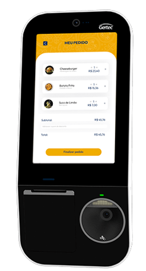
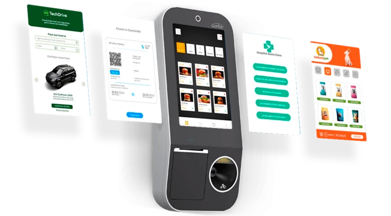
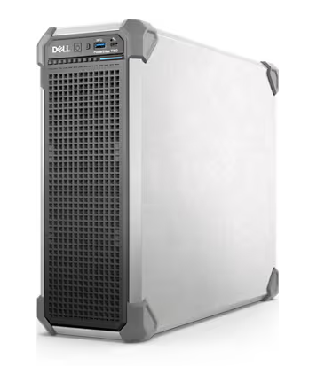
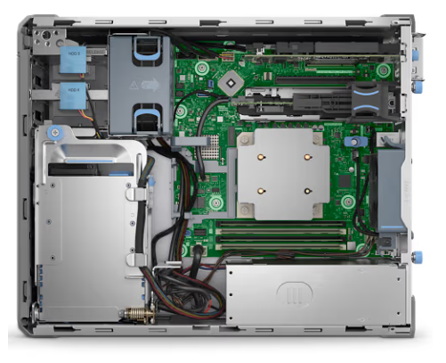

Livros Mágicos: História
A Livros Mágicos é uma empresa especializada em soluções tecnológicas para a modernização e automação de bibliotecas públicas e privadas. Fundada em 2024, nasceu com o propósito de transformar bibliotecas em ambientes inteligentes, acessíveis e seguros, utilizando tecnologias emergentes como RFID e NFC para otimizar a gestão de acervos, os processos de empréstimo e a segurança do patrimônio.
A empresa desenvolve um ecossistema integrado que inclui totens de autoatendimento, etiquetas RFID/NFC, módulos de segurança, integração com sistemas de gestão de bibliotecas (LMS) e recursos por proximidade para uso via dispositivos móveis. Todas as soluções são projetadas com foco em acessibilidade, autonomia do usuário e eficiência operacional.
Atualmente, a Livros Mágicos está em fase avançada de desenvolvimento de seu MVP, contando com uma equipe multidisciplinar dedicada à pesquisa, design e engenharia. Seus planos incluem o lançamento comercial das soluções, expansão do portfólio com recursos baseados em IA, parcerias estratégicas e entrada no mercado latino-americano.
A principal proposta de valor da Livros Mágicos é oferecer uma solução completa “end-to-end”, capaz de transformar bibliotecas em espaços modernos e autônomos, proporcionando agilidade, segurança, redução de custos e uma experiência aprimorada para todos os usuários.
Produtos
Etiquetas RFID
Etiquetas ou etiquetas RFID personalizadas, brancas ou impressas sob medida, para livros, revistas, documentos, CDs, DVDs, mapas e periódicos etc. Aumente a eficiência do seu trabalho e reduza erros durante os processos operacionais.
Podemos fornecer estilos comuns de etiquetas RFID para livros de biblioteca ou personalizar adesivos para livros de biblioteca com logotipos. Com adesivo neutro, eles podem ser facilmente fixados em diversos livros usando um substrato de papel e estão disponíveis em diferentes formatos e tamanhos. Você pode escolher entre alta frequência ou ultra-alta frequência para leitura a longa distância e captura automática de dados em aplicações de biblioteca.
Atualmente trabalhamos com 3 modelos de etiquetas/adesivos
- Icode Slix: Tipo de etiqueta de alta frequência projetada para bibliotecas. Essas etiquetas medem 50 x 50 mm e atendem à norma ISO15693.Elas podem ser lidas por meio de smartphones ou leitores de cartão com NFC. A tecnologia NFC Near também permite a leitura simultânea de várias etiquetas, facilitando o empréstimo ou a devolução rápida de livros.
- Adesivos UHF RFID: Os adesivos em papel UHF são projetados em um formato longo e em branco. Os pequenos adesivos podem ser colocados discretamente dentro dos livros sem impedir o empréstimo, mas são fáceis de ler para os funcionários.
Com uma distância de leitura de aproximadamente 1 metro, esses adesivos podem ser lidos e localizados rapidamente, mesmo quando colocados em prateleiras altas usando dispositivos portáteis. Eles não são afetados pela orientação dos livros ou pela forma como são expostos.

- Etiquetas RFID UHF LED: Essas etiquetas RFID de ultra-alta frequência vêm com luzes LED para rápida identificação.
Elas não só ajudam você a localizar rapidamente a direção geral de um livro, como também a localizar com precisão o livro exato que você está procurando.
Basta inserir o código, clicar em "pesquisar" e o LED da etiqueta correspondente começará a piscar.
Leitor de Mesa
- Modelo: ThingMagic “USB Pro UHF RAIN RFID Reader”
- Fabricante: Jadak, a Novanta Company
Baseado no módulo RFID M6e-micro LTE da ThingMagic, o USB Pro é compatível com o aplicativo Mercury API da ThingMagic (incluindo o Universal Reader Assistant), que fornece controle superior sobre os dispositivos ThingMagic para fabricantes de equipamentos originais (OEM) e fornecedores de software independentes (ISV) e facilita as complexidades do design enquanto acelera o desenvolvimento.
Um fator de forma independente fecha o módulo leitor, a antena e o processador, tudo o que é necessário para configurar e começar, com um padrão de interface USB. Tem um alcance máximo de 4 pés (1,2 m) com fonte de alimentação USB e suporta o padrão EPC Gen2V2 e ISO 18000-63, lendo etiquetas a uma taxa de 50 tags/seg. O USB Pro pode ser personalizado para frequências em regiões fora das Américas, União Europeia (UE), Índia, Coréia, Austrália, China e Japão, para protocolos padrão RFID adicionais, e o alcance de leitura pode ser estendido para 30 pés (10 m) usando o conector externo da antena RP-SMA.
Totem de Autoatendimento
- Modelo: Totem de Autoatendimento Smart SK210 NFC
- Fabricante: Gertec
Autonomia e experiência diferenciada ao permitir que os clientes escolham diretamente os itens desejados, a possibilidade de erros de comunicação entre o cliente e o atendente é minimizada, resultando em pedidos mais precisos.

Com sistema de fixação VESA e suporte incluso, o Totem SK210 oferece três possibilidades de posicionamento e fixações extras para acessórios adicionais. Tenha total controle sobre a disposição do seu dispositivo, adaptando-o às suas necessidades específicas.
O reconhecimento facial adiciona uma camada de conveniência e segurança, redefinindo a interação entre o usuário e a tecnologia, abrindo um mundo de possibilidades.

O Smart SK210 NFC possui um desempenho elevado, com um processador de alta performance, o Totem SK210 não apenas atende, mas supera suas expectativas. Execute múltiplas tarefas de forma fluida e rápida, garantindo eficiência em todas as suas operações.
Com a tecnologia NFC você garante ainda mais possibilidades no seu negócio, ganhando mais velocidade e melhorando a experiência do seu cliente no dia a dia.
Terminal de Portão
- Modelo: Terminal de Portão RFID UHF CK-T5
- Fabricante: Cykeo
O terminal de portão RFID UHF CK-T5 oferece desempenho de nível industrial especialmente eficiente para gestão de bibliotecas.
O sistema de leitura baseado em algoritmos avançados de anticolisão e operação em 840–960 MHz garante identificação rápida e precisa de livros e materiais, mesmo em ambientes de alto fluxo. A taxa de falha inferior a 0,1% torna o equipamento ideal para processos críticos, como controle de empréstimos, devoluções e auditorias de acervo.
Sensores infravermelhos integrados permitem detecção direcional, identificando com precisão se um item está entrando ou saindo da biblioteca, enquanto seus alarmes de modo duplo oferecem uma camada adicional de segurança contra retirada indevida de livros. Isso permite que o CK-T5 funcione tanto como gate antifurto quanto como elemento central em sistemas de automação de acervo.
Projetado para ambientes bibliotecários modernos, o CK-T5 otimiza inventários, reduz perdas, melhora o fluxo de circulação e agiliza o atendimento ao usuário. Embora também seja aplicável ao varejo e armazéns, seu destaque está na capacidade de elevar a eficiência operacional e a segurança das bibliotecas.
Servidor
- Modelo: Servidor Torre PowerEdge T160
- Fabricante: Dell
O Dell PowerEdge T160 é um servidor em torre 3U de alto desempenho, projetado com um soquete único e chassi compacto de 17 litros, ideal para ambientes near-edge, pequenas e médias empresas e estruturas que precisam de processamento confiável em um espaço reduzido.

Ele suporta processadores Intel Xeon de última geração, oferece opções de memória expansível e armazenamento flexível, incluindo SSDs e HDDs empresariais, permitindo montar desde soluções simples até configurações robustas para bancos de dados ou aplicações críticas.
O T160 é especialmente útil para execução de sistemas de gestão, bancos de dados como PostgreSQL, virtualização leve, serviços de rede, controle de acesso, automação comercial e integrações com dispositivos externos (como portais RFID, scanners e IoT).
Sua arquitetura garante baixo consumo de energia, operação silenciosa e alta eficiência térmica, tornando o equipamento adequado para escritórios, salas técnicas pequenas ou estruturas sem datacenter completo.

Com conectividade avançada, suporte a RAID, Ethernet gigabit e ferramentas de gerenciamento da linha Dell iDRAC, o PowerEdge T160 oferece segurança, estabilidade e escalabilidade para empresas que precisam de um servidor confiável para crescer sem complicações.